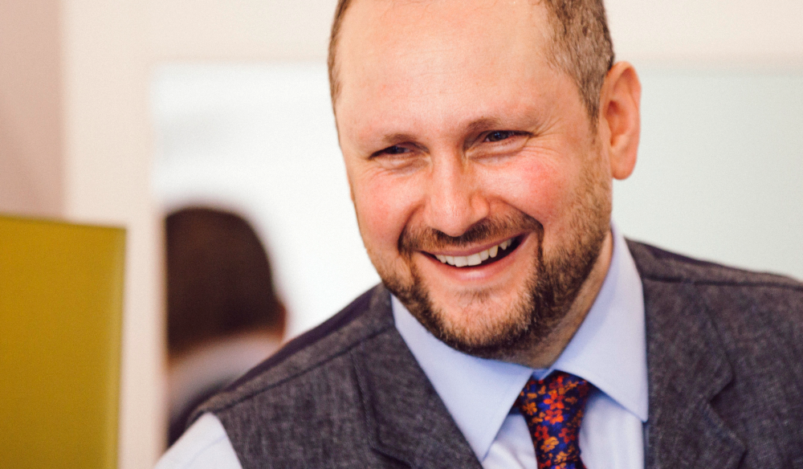

Hi! My name is Roland
I'm a full-stack web developer. My SKILLS include Javascript, CSS, HTML5 and basic PHP. Feel free to browse my PROJECTS, find out more ABOUT ME and GET IN TOUCH
PROJECTS

- Website: meditateinlondon.org
- Brief: Promote meditation classes in London
- Built with: Wordpress, HTML, CSS, php

- Website: wixsite.com/wedding
- Brief: Provide guests with wedding information
- Built with: Wix

- Website: andrewlevy.co.uk
- Brief: Promote Andrew Levy's accupuncture services
- Built with: Wordpress
SKILLS
- Languages: Javascript, CSS, HTML, basic php
- Programs: Photoshop, Indesign, Illustrator
- Other skills: Event manager, meditation teacher
ABOUT ME

I'm originally from a fine art background. After graduating I travelled, retrained and discovered coding.
Coding matched my fascination with how and why things work, or don't work - internally and externally.
For example, wanting to understand how the mind works led me to train in meditation which is all about developing inner peace.
Writing code isn't just about completing tasks and projects but its more about how people think, speak and work.
I beleive the essential ingredient for succesful working relationships is a positive and peaceful mind.
My intention is to do my job well and keep a positive attitude towards others - no matter how challenging the situation may be.